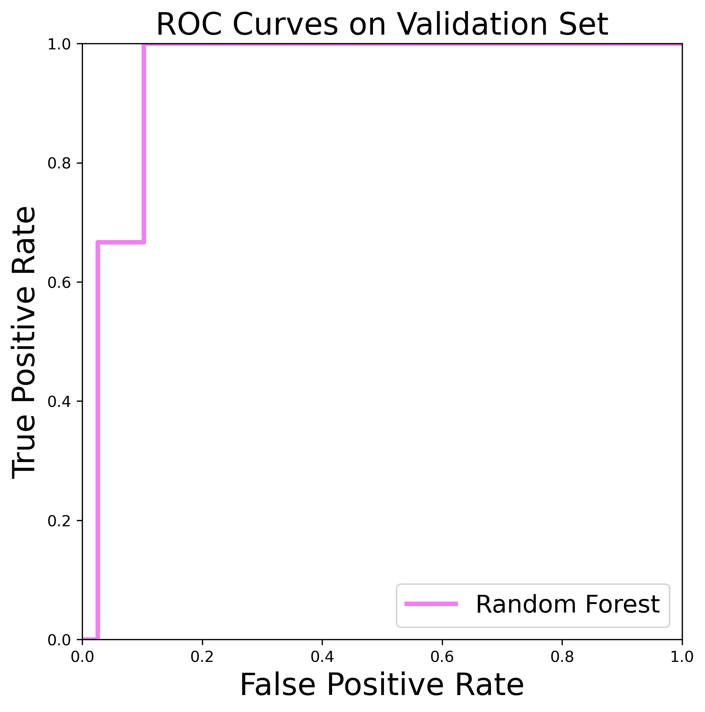
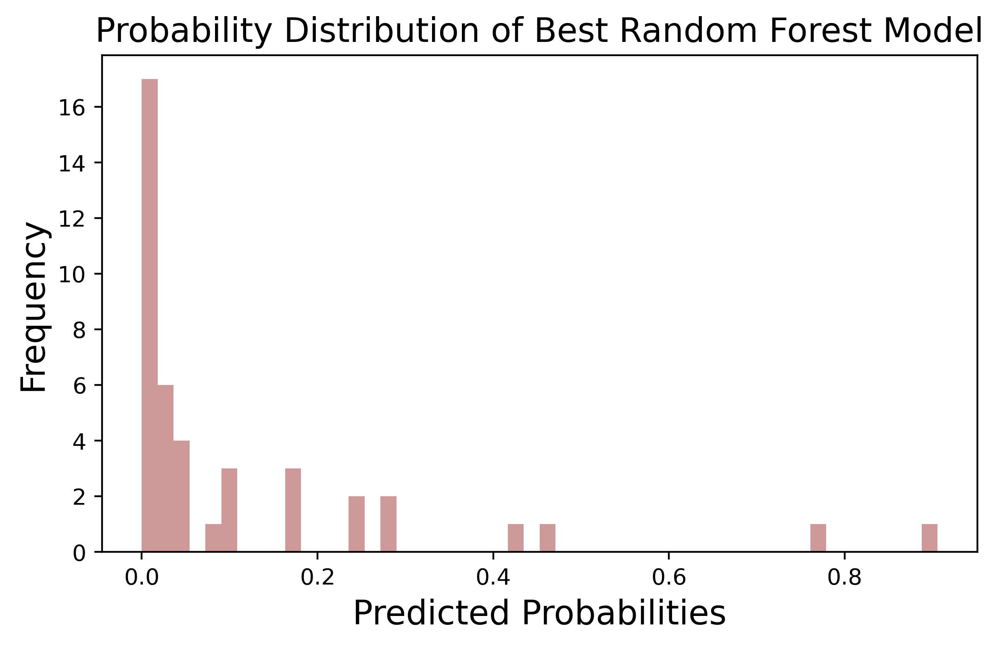

Disclaimer: This work has not been formally reviewed by NSF. The views expressed are solely those of the authors and do not necessarily reflect those of these Agencies. ।
Preparaing the data
To define a "high incidence" county, we use the CDC's definition, which states that a county with more than 10 cases per population of 100,000 is considered to have a high incidence of Lyme Disease. To bin the data for classification models, we set the CDC cutoff to 10/100000
we observe the large class imbalance in the "high_incidence"
we are splitting a dataset into three parts: a training set, a validation set, and a test set. We do this so that we can evaluate how well our Random Forest model works on new, unseen data. We split the dataset in a way that ensures that each set has a representative sample of the different classes present in the target variable
we are specifying the hyperparameters for our Random Forest model. Hyperparameters are values that we set before we fit our model to the data. These values control how the model behaves and can affect its performance. In this case, we are setting three hyperparameters: the maximum number of features used at each split of the tree ("max_features"), the minimum number of samples required to be at a leaf node ("min_samples_leaf"), and the number of trees in the forest ("n_estimators"). These values were chosen based on experimentation and tuning to achieve good performance.
Our pipeline for training the Random Forest model included a set of hyperparameters that were carefully tuned to optimize its performance. Specifically, we set the "max_features" parameter to "sqrt", which limits the number of features considered at each split of the tree, the "min_samples_leaf" parameter to 2, which sets a minimum number of samples required to be at a leaf node, and the "n_estimators" parameter to 1500, which determines the number of trees in the forest.
In addition to these hyperparameters, we applied a set of transformations and resampling techniques to the data before fitting the Random Forest model. These included scaling the data using the "StandardScaler" function, which standardizes the features to have a mean of 0 and a variance of 1, and then fitting a Random Forest Classifier to the transformed data, with the "n_jobs" parameter set to -1 to take advantage of all available processors.
The false positive rate (FPR) is the proportion of true negative instances that are incorrectly classified as positive (i.e., the number of false positives divided by the total number of true negatives). It represents the model's tendency to classify negative instances as positive. In your case, the FPR array contains values ranging from 0 to 1, with the first value being 0 and the last value being 1. This suggests that your model is able to achieve perfect specificity (i.e., no false positives) at the cost of reduced sensitivity (i.e., higher false negatives).
The true positive rate (TPR), also known as sensitivity or recall, is the proportion of true positive instances that are correctly classified as positive (i.e., the number of true positives divided by the total number of positive instances). It represents the model's ability to correctly classify positive instances. In your case, the TPR array ranges from 0 to 1, with the last three values being 1. This suggests that your model is able to achieve perfect sensitivity at the cost of reduced specificity (i.e., higher false positives).
The probability distribution gives us insight into how confident the model is in its predictions for each possible class.
The ROC AUC score is a metric used to evaluate the performance of a classification model. It stands for Receiver Operating Characteristic Area Under the Curve score, and it measures the model's ability to distinguish between positive and negative classes. The ROC AUC score ranges from 0 to 1, with a score of 1 indicating a perfect model that can correctly identify all positive and negative classes. A score of 0.5 indicates a model that performs no better than random chance. In this case, the model achieved a ROC AUC score of 0.974, which is considered a very good score. It indicates that the model is highly accurate at distinguishing between positive and negative classes, and can be considered a reliable predictor of the target variable.
The confusion matrix is a performance evaluation matrix that is used to assess the accuracy of a classification model. It is a table that shows the number of true positives, false positives, true negatives, and false negatives for a given classification problem. In the matrix, the true positives (TP) represent the number of correctly classified positive instances, while false positives (FP) represent the number of negative instances that were wrongly classified as positive. True negatives (TN) represent the number of correctly classified negative instances, and false negatives (FN) represent the number of positive instances that were wrongly classified as negative. In the given confusion matrix, the first row represents the actual negative instances, while the second row represents the actual positive instances. The first column represents the predicted negative instances, while the second column represents the predicted positive instances. From the matrix, we can see that there are 35 true negatives (TN) and 3 true positives (TP), indicating that the model correctly classified 38 instances out of a total of 42 instances. There are also 4 false positives (FP) and 0 false negatives (FN), indicating that the model incorrectly classified 4 instances as positive when they were actually negative.